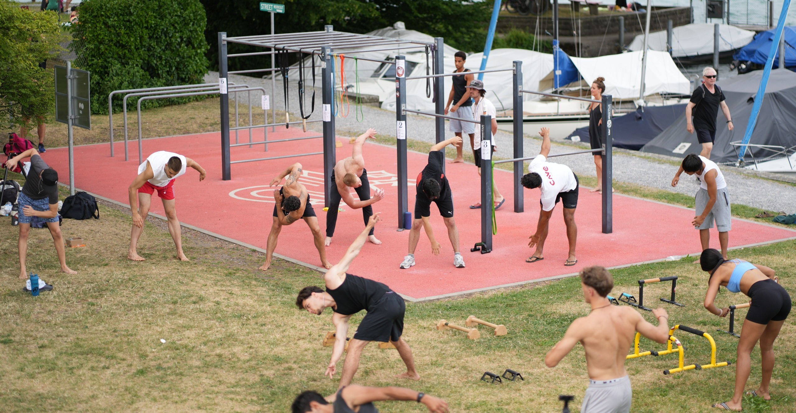
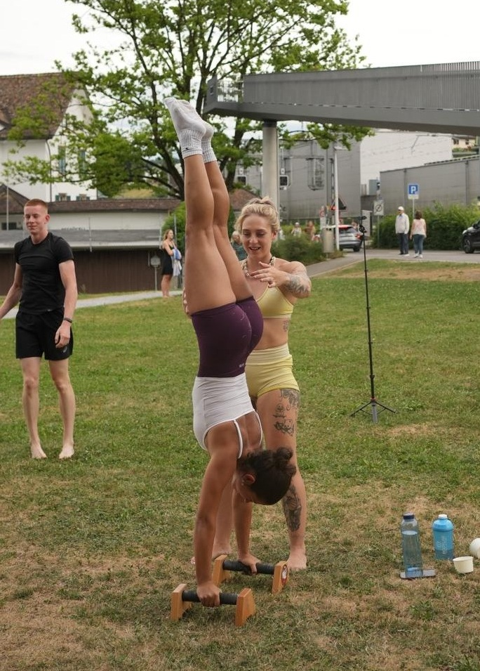
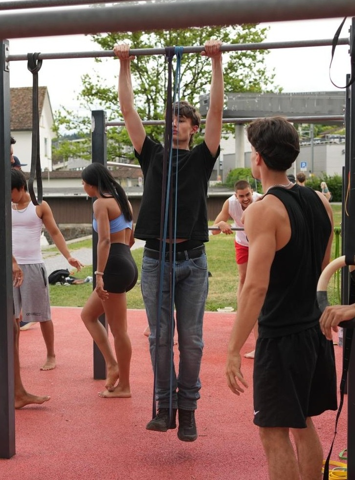
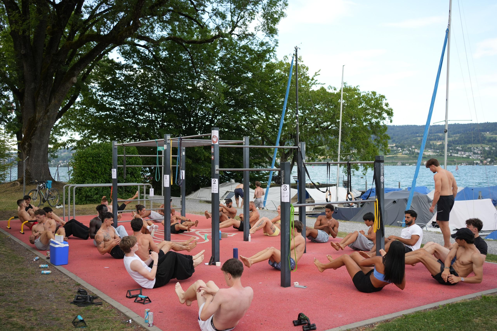

Sonntagnachmittag, der Tag neigt sich dem Ende zu und die ersten Swan Community Mitglieder sammeln sich beim Street Workout Park in Horgen. Wer denkt, dass Calisthenics ein reiner Einzelsport ist, bei dem jeder stumm für sich trainiert, hat unsere Community noch nicht erlebt. Bei Swan Calisthenics pushen wir uns gegenseitig zu neuen Höchstleistungen. Aber wie läuft so ein gemeinsames Training eigentlich genau ab? In diesem Beitrag nehmen wir dich mit hinter die Kulissen unseres typischen Community Workouts.
"Connect - grow - repeat"
Genau das ist unser Motto: Wir vernetzen uns, wachsen gemeinsam über unsere Grenzen hinaus und kommen nächste Woche umso stärker wieder. Egal ob du absoluter Anfänger bist oder bereits den perfekten Muscle-Up beherrschst – bei uns trainiert niemand allein. Der Teamgeist auf dem Platz sorgt für eine Energie, die man im normalen Fitnessstudio vergeblich sucht.
Typischer Sonntag
Um dir zu zeigen, was dich erwartet, haben wir hier den Ablauf. Das ist unser roter Faden:
- Warm-up
- Skills training
- Full-Body Workout
- Stretch-out
- Gruppenbild
1. Warm-up
Ein solides Training steht und fällt mit der Vorbereitung. Bevor wir auch nur eine Stange berühren, bringen wir den Kreislauf auf Touren und mobilisieren unsere Gelenke. Unser Warm-up besteht aus einer Mischung aus dynamischem Dehnen, Handgelenks-Mobilisation (essentiell im Calisthenics!) und kleinen, spielerischen Core-Übungen. Das macht nicht nur wach, sondern bricht auch direkt das Eis in der Gruppe. So sind die Muskeln warm, die Gelenke geschmiert und das Verletzungsrisiko sinkt auf ein Minimum.

2. Skills Training
Nach dem Warm-up widmen wir uns der Königsklasse: Den Skills. Hier dreht sich alles um Bewegungslernen und Technik. Aktuell stehen vor allem der Handstand und der Muscle-Up im Fokus. Wir teilen uns dafür oft in kleinere Gruppen auf, sodass jeder auf seinem Niveau arbeiten kann. Anfänger bekommen Unterstützung von Fortgeschrittenen. Der Clou: Jeder hilft jedem mit Tipps und Spotting.


3. Full-Body Workout
Wenn die Konzentration für die schweren Skills nachlässt, schalten wir um auf pure Kraft und Ausdauer. Unser Hauptteil ist als dynamischer Postenlauf aufgebaut: Es warten verschiedene Stationen auf uns, die den gesamten Körper fordern. Mit dabei sind Klassiker und gezielte Calisthenics-Übungen wie Liegestütze, Pike Push-ups, Australian Pull-ups, Chin-ups, Dips und explosive Jumping Squats.
Das Prinzip ist knackig: Jeder Posten wird von jeder Person insgesamt 3-mal nacheinander für jeweils 30 Sekunden intensiv belegt. Dazwischen hat man 30 Sekunden Pause, beim Wechsel des Posten hat man 90 Sekunden Pause. Nach dem Postenlauf ist aber noch nicht Feierabend! Für das große Finale kommen alle wieder zusammen: Wir absolvieren gemeinsam ein brennendes Bauchmuskel-Workout und krönen das Ganze am Schluss mit einer gemeinsamen Plank-Challenge, bei der wir die letzten Sekunden Willenskraft aus uns herausholen.

4. Stretch-out
Nach dem Sturm kommt die Ruhe. Beim Stretch-out fahren wir das Nervensystem wieder herunter. Wir dehnen die beanspruchte Muskulatur – insbesondere den Oberkörper, die Schultern und die Brust – und nutzen die Zeit für statisches Dehnen. Das ist der Moment, in dem die Anspannung abfällt, alle erschöpft aber glücklich auf dem Boden liegen und man einfach das gute Gefühl genießt, gemeinsam Gas gegeben zu haben.
5. Gruppenbild
Kein Training endet bei uns ohne ein Gruppenfoto! Wenn der Schweiß getrocknet ist und das Lächeln zurückkommt, stellen wir uns alle zusammen auf. Dieses Bild erinnert uns jede Woche daran, warum wir das machen: Weil Sport in der Community einfach dreimal so viel Bock macht.

Zusammenfassung & Fazit
Unser Community Workout ist mehr als nur ein Fitnessprogramm – es ist der Ort, an dem aus Trainingspartnern Freunde werden. Du brauchst keine Vorkenntnisse, um bei uns einzusteigen; alles was du mitbringen musst, ist Bock auf Bewegung und eine gute Portion Motivation. Also, worauf wartest du noch? Pack deine Sportsachen ein und werde Teil der Swan Calisthenics Family!